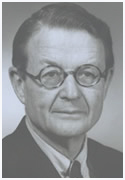

Catholics
United for the Faith (CUF) is an international lay apostolate, building on the only sure foundation for happiness and renewal
of the family and society: the teachings of Jesus Christ and His Church.

of the family and society: the teachings of Jesus Christ and His Church.
|
Founded by H. Lyman Stebbins in 1968 to support, defend, and advance the efforts of the teaching Church, CUF has helped tens of thousands of people discover and strengthen their Catholic faith. |
 |